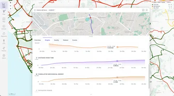

Watch folder
Copy files into the ./data/gpx/ folder. MTL Explorer picks up new files automatically.
Supported GPS formats
MTL Explorer reads nine common GPS and activity formats, from GPX and FIT to KML and IGC. All your tracks end up on the same map, whatever device recorded them.

On a small screen, scroll the table sideways to see all columns.
| Format | Extension | Processing | Common source |
|---|---|---|---|
| GPX | .gpx | Read directly | GPS devices, route planners, and activity exports |
| FIT | .fit | Converted automatically | Garmin and other fitness devices |
| TCX | .tcx | Converted automatically | Training Center activity exports |
| KML | .kml | Converted automatically | Google Earth and mapping tools |
| KMZ | .kmz | Unzipped and converted automatically | Compressed Google Earth files |
| IGC | .igc | Converted automatically | Gliding and flight loggers |
| NMEA | .nmea | Converted automatically | Recorded NMEA 0183 GPS sentences |
| GeoJSON | .geojson | Converted automatically | GIS and web mapping tools |
| GDB | .gdb | Converted automatically | Garmin MapSource databases |
MTL Explorer reads positions, timestamps, elevation, and the track name and description. What you get depends on what your file contains.
| Data | Native GPX | FIT, TCX, KML/KMZ, IGC, NMEA, GeoJSON, GDB | What to expect |
|---|---|---|---|
| Track positions | GPX track points and route points | Track or route geometry emitted by conversion | Needed for every track. Files with only single waypoints don't create a track. Planned routes without times show on the map, but without speed or duration. |
| Timestamps | Point times when present | Point times retained by conversion | Needed for speed, duration, and segment times. Routes exported from a planner often have no times. |
| Elevation | Point heights when present | Heights retained by conversion | Used for elevation profiles and climb. Converting a file can't add heights that aren't in it. |
| Name and metadata | Track name, description, type, creator, and supported metadata | Supported fields emitted in GPX | Some device-specific labels may look different. |
| Sensor extensions | Heart rate, cadence, and power in the file are not imported | Not imported | Keep the original file for these values. MTL Explorer estimates power and energy, and can add heart rate from Google Health. |
| Original file | Retained | Retained | You can download the original file or a GPX version from Track Details. |
If a file has problems, Review shows what's wrong. There you can download it to fix it in another tool, or hide it from the map or statistics. See Review.
All files are processed the same way, whichever method you use.
Copy files into the ./data/gpx/ folder. MTL Explorer picks up new files automatically.
Open Settings → Import & sync and upload your files from the browser. Unzip ZIP archives first.
Optionally, download your new Garmin Connect activities automatically.
If new files don't show up, for example on a network drive, use Settings → Maintenance → Rescan GPS. Check the result in Settings → Processing.
After import
Your original file stays where it is. After import, MTL Explorer:
